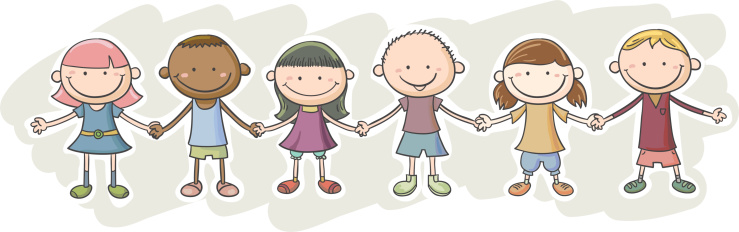

This page in going to be showcasing some of my favorite things about school!

Let's first dive into my schedule!!
A Period: Connections Lit
B Period: Connections Social Science
C Period: Algebra 2
D Period: Spanish 3
E Period: Free Period
F Period: Web Design 1
G Period: Biology
H Period: Free Period
one of my favorite things about school, is when I have volleyball! I think its really fun to play volleyball, because it is something I am passionate outside of school, but now I get to connect something that I like outside of school with school too.
☆
Another thing about school I like, is making notes! I like trying to stay organized, and making my notes pretty makes it much more entertaining to take them.
☆☆☆
☆☆☆
This video will help you take more aesthetic notes if your curious!!